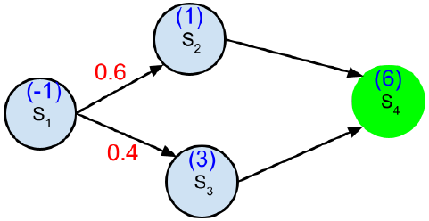
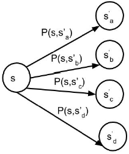
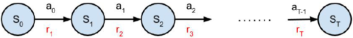

1 Notations
- State s_t : abstraction of observation,
- reward r_t :
- action a_t :
for an action at t the reward is r_{t+1}, at the state s_t
2 Morkov Decision Process
- Markov Decision Process (MDP) provides a mathematical framework for modeling decision making process
- Can formally describe the working of the environment and agent in the RL setting
- Can handle huge variety of interesting settings
- Multi-arm Bandits - Single state MDPs
- Optimal Control - Continuous MDPs
- Core problem in solving an MDP is to find an ‘optimal’ policy (or behaviour) for the decision maker (agent) in order to maximize the total future reward
3 Morkov chain
3.1 Random Variable and Stochastic process
- Random Variable (Non-mathematical definition) : A random variable is a variable whose value depend on the outcome of a random phenomenon
- Outcome of a coin toss
- Outcome of roll of a dice
3.2 Stochastic Process
A stochastic or random process, denoted by \{s_t\}_t \in T , can be defined as a collection of random variables that is indexed by some mathematical set T
- Index set has the interpretation of time
- The set T is, typically, \mathbb N or \mathbb R
- Typically, in optimal control problems, the index set is continuous (say \mathbb R)
- Throughout this course (RL), the index set is always discrete (say \mathbb N)
- Let \{s_t\}_t \in T be a stochastic process
- Let s_t be the state at time t of the stochastic process \{s_t\}_t \in T
4 Markov Property
A state s_t of a stochastic process \{s_t\}_t \in T is said to have Markov property if :
P(s_{t+1}|s_{t})=P(s_{t+1}|s_{1},\cdot\cdot\cdot,s_{t})
The state s_t at time t captures all relevant information from history and is a sufficient statistic of the future.
5 Transition Probability
State Transition Probability:
For a Markov state s and a successor state s', the state transition probability is defined by
\mathcal P_{s s^{\prime}}=P(s_{t+1}=s^{\prime}|s_{t}=s)
State transition matrix \mathcal P then denotes the transition probabilities from all states s to all successor states s' (with each row summing to 1)
\begin{bmatrix} \mathcal P_{11} & \mathcal P_{12} & \cdots & \mathcal P_{1n} \\ \vdots \\ \mathcal P_{n1} & \mathcal P_{n2} & \cdots & \mathcal P_{nn} \\ \end{bmatrix}
6 Markov Chain
A stochastic process \{s_t\}_t \in T is a Markov process or Markov Chain if the sequence of random states satisfy the Markov property. It is represented by tuple \langle \mathcal S,\mathcal P \rangle where \mathcal S denote the set of states and \mathcal P denote the state transition probablity
6.1 Markov Chain : Example 1

State \mathcal S = Sunny; Rainy
Transition Probability \mathcal P= \begin{bmatrix} .8 & .2\\ .7 & .3 \end{bmatrix}
Probability that tomorrow will be ‘Rainy’ given today is ‘Sunny’ = 0.2
Probability that day-after-tomorrow will be ‘Rainy’ given today is ‘Sunny’ is given by (tomorrow is sunny and day after tomorrow is rainy ) or ( tomorrow is rainy and day after tomorrow is rainy) 0.8 * 0.2 + 0.2 * 0.3 = 0.22
In general, if one step transition matrix is given by,
\mathcal P = \begin{bmatrix} \mathcal P_{ss} & \mathcal P_{sr}\\ \mathcal P_{rs} & \mathcal P_{rr} \end{bmatrix}
then the two step transition matrix is given by
\mathcal P_{(2)} = \mathcal P^{2}
In general, n-step transition matrix is given by \mathcal P_{(n)} = \mathcal P^{n}
Assumption
- We made an important assumption in arriving at the above expression. That the one-step transition matrix stays constant through time or independent of time
Markov chains generated using such transition matrices are called homogeneous Markov chains (transition probabilities depend on the length of time interval [t_1, t_2] but not on the exact time instants)
6.2 Markov Chains : Examples 2
One dimensional random walk
- A walker flips a coin every time slot to decide which ‘way’ to go.
- s_{t+1} = \begin{cases} s_t +1 &\text{with probability } p \\ s_t -1 &\text{with probability } 1-p \end{cases}
7 Notion of Absorbing State
A state s \in S is called absorbing state if it is impossible to leave the state. That is,
\mathcal P_{ss'} = \begin{cases} 1 &\text{if } s=s' \\ 0 &\text{otherwise } \end{cases}
8 Markov Reward Process
A Markov reward process is a tuple \langle \mathcal S, \mathcal P, \textcolor{red}{\mathcal R},\textcolor{red} {\gamma} \rangle a Markov chain with values
- \mathcal S : (Finite) set of states
- \mathcal P : State transition probablity
- \textcolor{red}{\mathcal R} : Reward for being in state s_t is given by a deterministic function \textcolor{red}{\mathcal R} \textcolor{red}{r_{t+1}}= \textcolor{red}{\mathcal R(s_t)}
- \textcolor{red}{\gamma}: Discount factor such that \textcolor{red}{\gamma} \in [0,1]
9 Total Return
- At each time step t, there is a reward r_{t+1} associated with being in state s_t
- Ideally, we would like the agent to pick such trajectories in which the cumulative reward accumulated by traversing such a path is high
If the reward sequence is given by \left\{r_{t+1},\,r_{t+2},\,r_{t+3},\,\cdot\,\cdot\,\right\}, then, we want to maximize the sum r_{t+1}+r_{t+2}+r_{t+3}+\cdot\cdot\cdot
Define G_t to be
G_{t}=r_{t+1}+r_{t+2}+r_{t+3}+\cdot\cdot\cdot\cdot=\sum_{k=0}^{\infty}r_{t+k+1}
The goal of the agent is to pick such paths that maximize G_t
10 Total (Discounted) Return
In the case that the underlying stochastic process has infinite terms the above summation (total return) could be divergent
Therefore, we introduce discount factor \gamma \in [0,1] and redefine G_t as
G_{t}=r_{t+1}+\gamma r_{t+2}+\gamma^{2}r_{t+3}+\cdot\cdot\cdot\cdot=\sum_{k=0}^{\infty}\gamma^{k}r_{t+k+1}
- G_t is the total discounted return starting from time t
- If \gamma < 1 then the infinite sum has a finite value if the reward sequence is bounded.
- \gamma close to 0 the agent considers only with immediate reward(s) (myopic)
- \gamma close to 1 the agent considers future reward more strongly (far-sighted)
11 Few Remarks on Discounting
- Mathematically convenient to discount rewards
- Avoids infinite returns in cyclic and infinite horizon setting
- Discount rate determines the present value of future reward
- Offers trade-off between being ‘myopic’ and ‘far-sighted’ reward
- In finite MDPs, it is sometimes possible to use discounted reward (i.e. \gamma= 1), for example, if all sequences terminate
12 Value Function
The value function V (s) gives the long-term value of state s \in S V(s)=\mathbb{E}\left(G_{t}|s_{t}=s\right)=\mathbb{E}\left(\sum_{k=0}^{\infty}\gamma^{k}r_{t+k+1}|s_{t}=s\right)
- Value function V (s) determines the value of being in state s
- V (s) measures the potential future rewards we may get from being in state s
V (s) is independent of t
13 Value Function Computation : Example
Consider the following MRP. Assume \gamma = 1

- V(S_4)=6
- V(S_3) = 3+ V(S_4)=9
- V(S_2) = 1+ V(S_4)=7
- V(S_1) = -1+0.4 \times V(S_3)+0.6 \times V(S_2)=6.8
14 Decomposition of Value Function
Let s be the state at time step t and s' be the state at time steps t + 1, the value function can be decomposed into sum of two parts
Immediate reward r_{t+1}
Discounted value of next state S' i.e. \gamma V(S')
Important\begin{align*} V(s)=\mathbb{E}\,(G_{t}|s_{t}=s) &= \mathbb{E}\left(\sum_{k=0}^{\infty}\gamma^{k}r_{t+k+1}|s_{t}=s\right)\\ & =\mathbb{E}\left(r_{t+1}+\gamma V(s_{t+1})|s_{t}=s\right) \end{align*}
14.1 Proof
We know that,
G_{t}=\left(r_{t+1}+\gamma r_{t+2}+\gamma^{2}r_{t+3}+\cdot\cdot\cdot\right)=\sum_{k=0}^{\infty}\left(\gamma^{k}r_{t+k+1}\right)
\begin{align*} V(S) &= \mathbb{E}\left(G_{t}|s_{t}=s\right)=\mathbb{E}\left(\sum_{k=0}^{\infty}\gamma^{k}r_{t+k+1}|s_{t}=s\right)\\ & =\mathbb{E}\left(r_{t+1}+\gamma r_{t+2}+\gamma^{2}r_{t+3}+\cdots|s_{t}=s\right)\\ & =\underbrace{\mathbb{E}(r_{t+1}|s_{t}=s)+\sum_{k=1}^{\infty}\gamma^{k}\operatorname{E}(r_{t+k+1}|s_{t}=s)}_{\text{By linearity of conditional expectation }} \\ & = \mathbb{E}(r_{t+1}|s_{t}=s)+\overbrace{\gamma\sum_{s^{\prime}\in{\mathcal{S}}}\underbrace{P(s^{\prime}|s)}_{\text{transition probability}}}^{\text{take all transition in account }} \underbrace{\sum_{k=0}^{\infty}\gamma^{k}\mathbb{E}\left(r_{t+k+1}|s_{t}=s,s_{t+1}=s^{\prime}\right)}_{\text{Count rewards again on reaching to s' form s}} \\ & = \mathbb{E}(r_{t+1}|s_{t}=s)+\gamma\sum_{s^{\prime}\in{\mathcal{S}}}P(s^{\prime}|s)\underbrace{\sum_{k=0}^{\infty}\gamma^{k}\mathbb{E}(r_{t+k+1}|s_{t+1}=s^{\prime})}_{\text{Using Markov property}} \\ & = \underbrace{\mathbb{E}(r_{t+1}+\gamma V(s_{t+1})|s_{t}=s)}_{\text{by the definition of value function }} \end{align*}
15 Value Function : Evaluation
We have V(s)=\mathbb{E}(r_{t+1}+\gamma V(s_{t+1})|s_{t}=s)

V(s)={\mathcal{R}}(s)+\gamma\left[{\mathcal{P}}_{s s_{a}^{\prime}}V(s_{a}^{'})+{\mathcal{P}}_{s s_{b}^{\prime}}V(s_{b}^{'})+{\mathcal{P}}_{s s_{c}^{\prime}}V(s_{c}^{'})+{\mathcal{P}}_{s s_{d}^{\prime}}V(s_{d}^{'})\right]
16 Bellman Equation for Markov Reward Process
V(s)=\mathbb{E}(r_{t+1}+\gamma V(s_{t+1})|s_{t}=s)
For any s' \in S a successor state of s with transition probability \mathcal P_{ss'} , we can rewrite the above equation as (using definition of Expectation)
V(s)=\mathbb{E}(r_{t+1}|s_{t}=s)+\gamma\sum_{s^{\prime}\in{\mathcal{S}}}{\mathcal{P}}_{s s^{\prime}}V(s^{\prime})
This is the Bellman Equation for value functions
17 Bellman Equation in Matrix Form
Let S=\{1,2,\cdot\cdot\cdot,n\} and \mathcal P be known. Then one can write the Bellman equation can as,
{ V}=\mathcal{R}+\gamma\mathcal{P}{ V}
\left\lbrack \begin{array}{c} V\left(1\right)\\ V\left(2\right)\\ \vdots \\ V\left(n\right) \end{array}\right\rbrack =\left\lbrack \begin{array}{c} \mathcal{R}\left(1\right)\\ \mathcal{R}\left(2\right)\\ \vdots \\ \mathcal{R}\left(n\right) \end{array}\right\rbrack +\gamma \left\lbrack \begin{array}{cccc} {\mathcal{P}}_{11} & {\mathcal{P}}_{12} & \cdots & {\mathcal{P}}_{1n} \\ {\mathcal{P}}_{21} & {\mathcal{P}}_{22} & \cdots & {\mathcal{P}}_{2n} \\ \vdots & & & \\ {\mathcal{P}}_{n1} & {\mathcal{P}}_{\mathrm{n2}} & \cdots & {\mathcal{P}}_{\mathrm{nn}} \end{array}\right\rbrack \times \left\lbrack \begin{array}{c} V\left(1\right)\\ V\left(2\right)\\ \vdots \\ V\left(n\right) \end{array}\right\rbrack
Solving for V we get
\boxed{V=(I-\gamma P)^{-1}R} The discount factor should be \gamma < 1 for the inverse to exist
Value function computed for a particular state provides the expected number of plays to reach the goal state s_{100} from that state, in snake ladder game.
18 Markov Decision Process
A Markov reward process is a tuple \langle \mathcal S,\textcolor{red}{ \mathcal A}, \mathcal P, \mathcal R, \gamma \rangle a Markov chain with values
- \mathcal S : (Finite) set of states
- \mathcal A : (Finite) set of actions
- \mathcal P : State transition probability {\mathcal{P}}_{s s^{\prime}}^{\textcolor{red}{a}}=\mathbb{P}(s_{t+1}=s^{\prime}|s_{t}=s,\textcolor{red}{a_{t}=a}),\textcolor{red}{a_{t}\in{\mathcal{A}}}
- \mathcal R : Reward for taking action at \color{red}a_t state s_t and transitioning to state s_{t+1} is given by the deterministic function \mathcal R r_{t+1}= \mathcal R(s_t,\textcolor{red}{a_t},s_{t+1})
- \gamma: Discount factor such that \gamma \in [0,1]
19 Flow Diagram

The goal is to choose a sequence of actions such that the expected total discounted future reward \mathbb{E}(G_{t}|s_{t}=s) is maximized where
G_{t}=\sum_{k=0}^{\infty}\left(\gamma^{k}r_{t+k+1}\right)
20 Finite and Infinite Horizon MDPs
- If T is fixed and finite, the resultant MDP is a finite horizon MDP
- Wealth management problem
- If T is infinite, the resultant MDP is infinite horizon MDP
- Certain Atari games
- When state S is finite, the MDP is called finite state MDPs
\tiny {\textcolor{#808080}{\boxed{\text{Reference: Dr. Vineeth, IIT Hyderabad }}}}